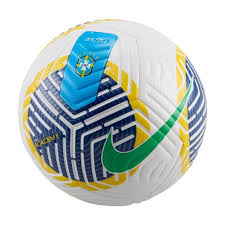
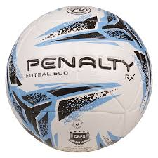
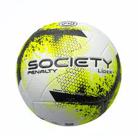
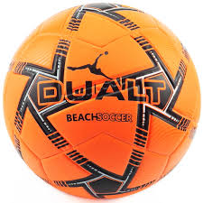

Formato: esférico
Cor: geralmente branca com estampas coloridas, mas pode variar
Material: couro sintético (PU ou PVC)
Composição: revestimento sintético, espuma interna e câmara de ar (látex ou borracha butílica)
Peso: entre 410 g e 450 g (bola oficial)
Circunferência: entre 68 cm e 70 cm
Tamanho oficial: Tamanho 5 (adulto/profissional)
Custo médio: entre R$ 50 e R$ 800, dependendo da marca e qualidade
Campo: usada no futebol tradicional

Futsal: menor e com menos quique

Society: adaptada para gramados sintéticos

Beach Soccer: mais leve e macia para areia
